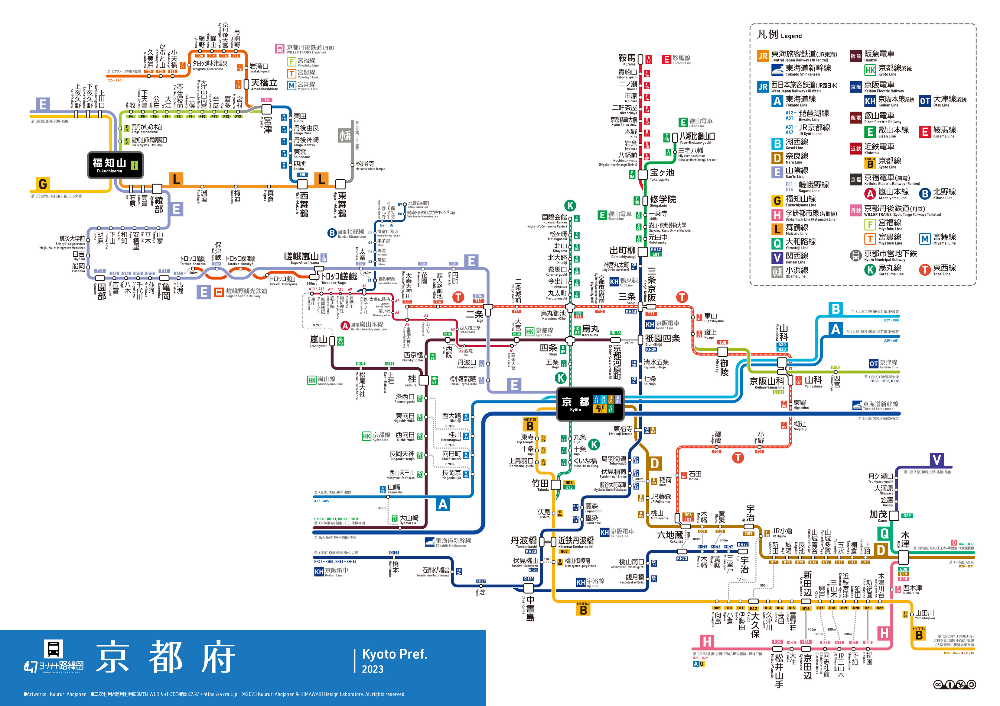

Kyoto Transport & Disaster Information
Welcome to the Kyoto Transport & Disaster Information Site!
This portal provides links to various public transportation operators in Kyoto, disaster hazard maps, and real-time river level information. We also provide guides on how to use local buses and trains.
This site is part of a research project by students from Osaka Metropolitan University College of Technology. We appreciate your feedback to help improve our future research.
Kyoto Railway Network Map

Railway Service Information
News Section
Help Section